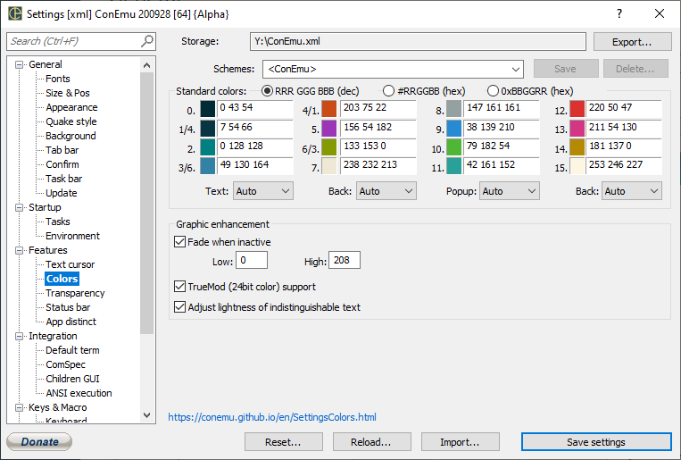

Solarized is an eye-candy color scheme specially designed for console and GUI applications.
But this scheme has eight monotones and eight accent colors in opposite to the Windows standard palette and many others which has twelve accent colors.
That may be a problem for some console applications which suppose that both lower and upper color octets has accented colors. Look at screenshot, colors 0..15 show Solarized palette, colors 16..31 show standard Windows colors.

If your application looks weird, some colors are fade or undistinguished there are two ways.
For example, MsysGit uses low color octet (dark green actually) for displaying branch names, updated (indexed) files, new diffs' lines and may be smth else. Just tell git use ‘green bold’ insted.
git config --global color.diff.new "green bold" git config --global color.status.updated "green bold" git config --global color.branch.current "green bold"
ConEmu has several Solarized schemes. For example <Solarized Git> was optimized for vanilla MsysGit, <Solarized (Luke Maciak)> has accented colors in lower octet, and so on. Just choose the desired scheme from dropdown list box.